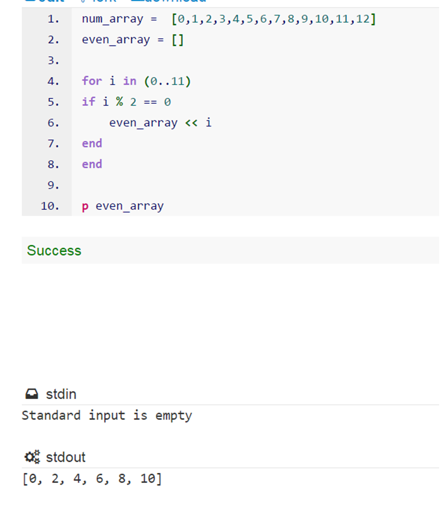
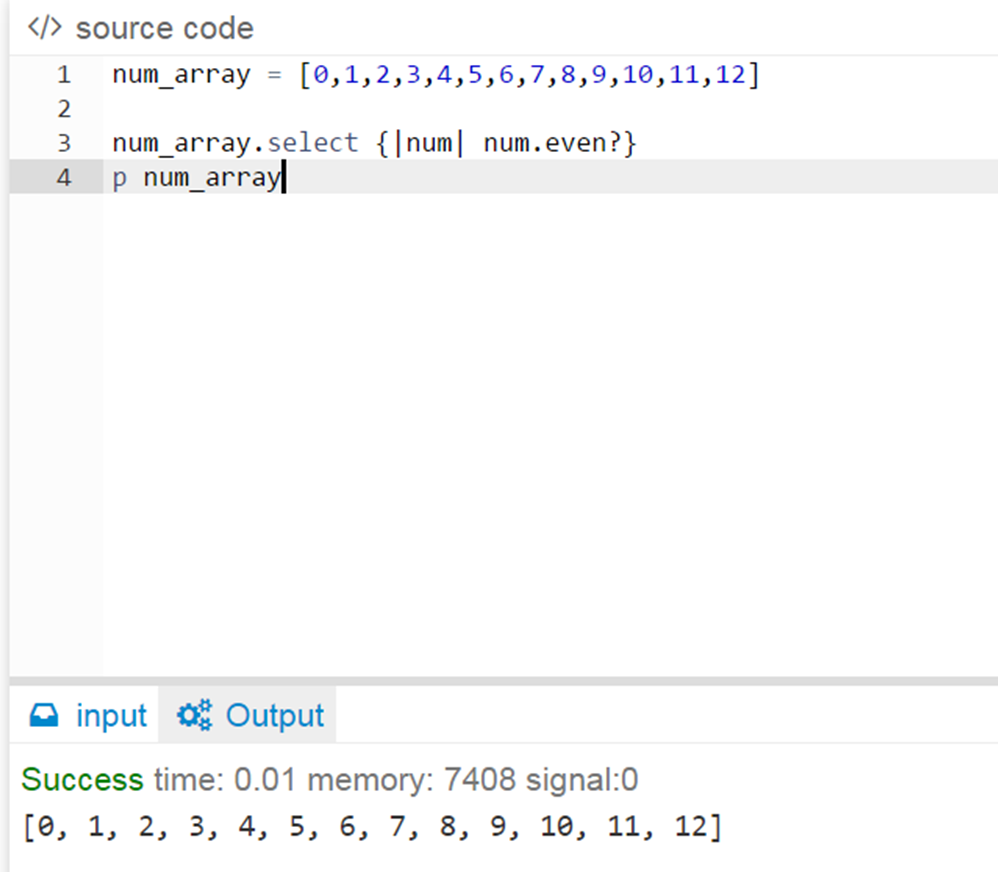

Iterators!
Blocks, Procs, and Lamdas
July 27, 2015
As has been iterated time and time agin, Ruby is a very powerful language with loads of capabilities. Those capabilities allow it to perform functions and create many lines of code with fairly terse input. The methods by which this is accomplished are done with different types of iterators. While Ruby has iterators that yield similar results, the mechanisms by whuch the iterations are accomplished differ in format, but nonetheless fall under the same category called closures. Closures are basically bits of code that that we can pass around and can refer to the lines of code that it stands for. The first one we will discuss is the block. The block allows you to simulate a #loop of sorts, for example, say we have a loop that iterates through an array and grabs all of the even numbers.

We can create a block that does that exact same thing. The only difference is that sometimes we are able to return a value in for loops and blocks sometimes change the original array or variable we began with as in the example below, which simply served to show its similarity to loops. Blocks are very useful since they enable the programmer to create a number of stipulations to sort and manipulate their data.

Another powerful iterator tool available to programmers is the "Proc", which is short for "Procedure." The awesome thing about a proc is that is is actually a bloc in variable form. Say you want to use a block on a variable or object? Well you can! And you can do it multiple times since it is saved and us knows in the program as a variable. This allows the programmer to save a lot of time and enables them to have many options for data that needs to be iterated. Say you want to use two different blocks on a variable, well procs allow you to do that! In order to implement a proc, create the block and give it a variable name, tand then call it with an ampersand pre-appended to it and voila! There you have a usable proc to be passed as a parameter to a function.You can also call the Proc and pass a parameter to it as shown below.

The next iteration tool we will discuss are lambdas. Lambdas are similar to procs but have slightly more functionality that procs. Lambdas be more stringent on its parameter restrictions, but its return capabilities allow you a greater depth of performance. The lambda returns from the actual lambda whereas return in procs and blocks returns from the method that it is inside of. This allows more interaction inside of a single method even after manipulating data.

After looking at these different types of iterations, it is easy to see how Ruby provides many methods of operations that can provide enough functionality for anyone's intended use. Its apparent that Ruby aims to please and its useful blocks, procs, and lambdas show it!